�ŏ��֍s�����I
�i�����j�@�Ƃ������k�@
�ŏ��֍s�����F
�����܁`�����c�ɂ́A�q1750�`1850���炢�̃����o�[�������B
�Ƃ������k���A�ނ�Ƃ���Ȃɑ傫�Ȏ��͍��͂Ȃ����A�u�q1850�v�����E�Ƃ���u�ŏ㋉�����L���O��v�̓o��ŁA�u��͍ŏ�őł��Ă���v�Ƃ����t�����l���ł��ă��b�L�[��(��)�B
�Ƃ͍ŏ�ł͂������������邵���܂ɕs������1850����A�܂��u���ł��ŏ�ɍs����v�Ƃ����Ӗ��ŁA������ƒ��q�ɏ���Ă݂���(�G���ށ�)��ˬ�!
�q1800�O��̂����܁`�����c�̔v�������ɁA�ǂ��ł������Ⴄ�̂��������A�݂�Ȃ��ŏ�ɗ������悤�ɑł��������ǂ��Ă������I
�Ȃ��A�����ł͖����u���Ƃ��ƈ���āA�u�ƂȂ炱���ł�v�Ƃ������Ƃ������Ђ����珑���Ă����B
�����͈Ⴄ��������Ȃ��B
�������A���Ȃ��Ƃ����̃R�[�i�[�̓����̖ړI�u�ŏ��֍s�����v�����͂��̑ł����ʼn\�Ȃ̂�(
�L�`)y����~~
Case�P�F2000/6/22�@�v���ҁF�Ƃ����֓�
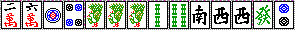
���Q�A�S���قڌ��_�̎�B�h���X�s�����e�B
�n�C�p�C���ς��ƌ��āA�Ƃ́u�s���t�n���ł��������v�u�z���C�c���ł��������v���炢���l����B
���������̏ꍇ�́A���ł̑I���͂��ꂾ���[�����Ǝv���B
�s���t�n�Ȃ�@�I�^���������v�����N�n�C�@�Ɛ�̂��菇�����A�z���C�c�̉\��������Ȃ畂���v�����B
����̎�͂ǂ����H
�s���t�n�����[�`�������ĂQ���ȏ�̎肪�ł���@�ő����`�ł͂Ȃ��B
�z���C�c�����Ƃ炢�B
�ŁA�Ƃ����ł́u�P�s���v�B
�P�s���������v������B�O�F���ǂ������ƌ����̂ł͂Ȃ��B
�P�Q�S�̌`�łR���������ꍇ�ɂ��A��������P�����c���߂�Ȃ�P�͂���Ȃ��B�P�Q�S�T�ɂȂ�����Q�����c�ɂȂ邯��ǁA�ǂ����ɂ��Ă��u���̃����c�ƕK�v�v�����Ԃ�y���`�����v�Ȃǂ���Ȃ��I�@�Ƃ����̂��Ƃ̎v�l�Ȃ̂�(�L-�M)��
�֓��́@��@������Ă���B
���̎�ł̓z���C�c�͌��Ȃ��̂��ȁH
�P�s���̑��݂́u�R�s�����������Ɓv��v������B�������u�R�s���������v���Ƃ́u������Ԃ点��v���ƂƓ�Փx���قƂ�Ǔ������B
���̎�ɂR�s���������Ă�����Ȃɂ��ꂵ���Ȃ����A���̎�ɓ삪���Ԃ�����������Ɗ�]�������ė������(
���ށ�)�����!
�����ɂ����Ȃ�@��@�����Ԃ����̂͌��ʘ_�����ǁA�����҂ɂ́A���������o���o���̎���o���o���̂܂܃N�\���[�Ɏ����Ă����l�������B����͂悭�Ȃ��B
������o���o���̎肾�Ɣ���������߂Ȃ���A���v���c���Ă������������Ǝv���Ă���B
�E���[�`���������Ă��~��₷��
�E�H���d�|���ł��邩��A�o���o���ł����Ƃ��オ��錩���݂��o�Ă���
�E�Ђ���Ƃ��ă��N�n�C�ƃh�����g�C�c�ɂȂ����肵���烉�b�L�[
�E�u���t�z���C�c���ł���
���炾�B
���Ă��炭���āi�S���ځj�����Ȃ����B
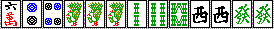
���I�@���n�C�g�C�c�Q�g�I���z���C�c�R(
�L�`)�
�֓��͂����ŏ�Ƃ̏o�����@�R�s�������Ԃ����Łu�`�B�v���Ă���
(#�L�D`)�m
���������Ȃ�(�_��)�@������e�Ƃ͌������̎�łS���ڂ��甭�݂̂ɂ��Ăǂ�����('��`)�@5800��1500�ł����(�܁[�܁G)
���ɂS�s�����g�C�c�ŁA�S�s�����|������Ȃ�킩��B����悭�g�C�g�C�A�������o�ɂ����S�A������ˁB�B
�S���ڂŃ\�[�Y�Ǝ��v�������Ȃ�A�s���Y���Q�R�S�Ƃ����Ă��V�\�E�Ƃ����������_�������c���Ƃ������(�܁ށ�)�"
���̌�֓���
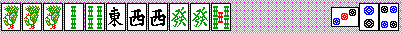
�����Ȃ����Ƃ���ŁA������Ă��܂����B�i���͂P���ꂾ�����j
���̌`�ł����オ�ꂽ�Ƃ���A�Q�\�E���Đ�Ύg��Ȃ��ł���H
�]���Ė���_�u�g�������������̂��߂ɂ��A���͎���Ă������B
�_�u�g������7700�B���łɊ֓��́@���@�����Ԃ��Ă�(��)�B
����A���ʂ͂�����挋�ʂ́B
�u����V�����p�C�̎��v�������m���́A�P�̃y���`���������c����������m���Ƃ������������v�B
�������y���`�������c���K�v������悤�ȃn�C�p�C�ł́A�����������N�n�C�Ȃǂ����Ԃ����������ꂵ�����̂��B
���ꂪ�|�C���g�ł��傤���B
����ƃz���C�c�������Ǝg�����B
�Ƃ@�T���ȍ~�ド���̂ݏW�v�@200�����@���Ϗ���2.27�@�オ��ɂ������F�`�̊���11.7���B
�z���C�c�̓u���t�ɂ��Ȃ�B
�o���o���ł�10���ڂ��炢�܂łɃ`�[���āA���F���o�V�o�V���Ă����Ă����ނ�Ɂu���ߐF�v�̂P�Ƃ�����Ă��A����̑Ŕv���x�����Ȃ�x���Ȃ邼(
���ށ�)�����!
�����ăr�r���ă^���s���̂����`���_�}�ŏオ�����肵�͂�(
�L�`)�߁@�����玸�_���Ғl��������܂��B
���[�`����Ă��I�^���Ƃ������Ă���~��₷�����B
�����ĉ����A���܂��܃��N�n�C�Ƃ������Ԃ��Ė{���̃z���C�c�ɂȂ����肷�邩�炢��(��)�B
�܂������̃n�C�p�C��5200�ɂ���������(�P���P�G)�@�Ƃ������Ƃ����܂ɂ���܂��B
���Ǒ���ɂƂ��ẮA�z���C�c���{���ł��邩�u���t�ł��邩���킩��Ȃ��킯�ŁA�v���b�V���[���������B
�����悱��(�L-�M)b
Case�Q�F2000/6/27�@�v���ҁF�݁`��
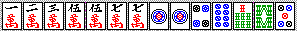
���P�łP���ځB�h���͖k���������e�ł��B
�����܂����H
�u�s���t���ł��������v�Ƃ������ƂŌ����A�s���t���ł������Ƀe���p�C�������Ȋ������Ȃ�(��)�B
���ł͕��ʂɂW�s���ŗǂ��ł��傤�B�݁[�Ȃ��������Ă��܂��B
���������g�C�c�`�̃����[����̏ꍇ�A�u�^�����I�E�����������ɂȁ`��v�ƔO���Ȃ���(��)�ł��܂��B
���邢�̓h���ɂ���Ƃ��ˁB�Ƃɂ������[�݂̂ŏ����Ƃ����͔̂����Ȃ�������Ȃ��B
���̏ꍇ�͐e������A�Œ�u�����������v�ɂȂ�������ǁA�N�Y����N�Y��̂܂܋��`�e���p�C�ɂ��Ȃ����Ƃ͏d�v�ł��B
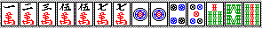
�R���ڂɂ��Ă����Ƃ���������܂����B
���R�T�}����E�E�E��(߃���)�
�݁[���P�s�����Ă�ł���(
�L�D`)('�D�M )�m
��ÂɂȂ�����݁`�Ȃł����R�T�}�����낤����(��)�A���̎�̃~�X�͔��������ˁB
�肪�o���o���̎��͂��������K���ȑł����ł�����قǖ��Ȃ��B
�Ƃ����̂��A�N�Y����ō��Ɍ����悭�ł��Ă��A�オ���m���͌��ǒႢ�킯������A�u�N�Y������܂��łZ�p�v�́A���Ϗ��ʂɂ���܂�e�����Ȃ��̂��B�������ō����x����ڎw���Ȃ炻�̋Z�p�����邾�낤���A�u�ŏ��֍s�����v�Ƃ������x�̖ړI�ɂ́A�����܂ōׂ����Z�p�͕K�v�Ȃ��Ǝv���B
��������A�������オ��`�����X�̎��A�~�X����̂͂����Ȃ��I�킯���B����͕��Ϗ��ʂɂ���ɉe�����邩���(�L-�M)
CASE�P�̊֓��̗Ⴞ�ˁU(�L���M�G)
������A�n�C�p�C���N�Y��̂Ƃ��͐Q���ׂ��đł��Ă��Ă�����(��)
�n�C�p�C�Ńh�����Q�������Ȃ�A����̓K�o�b�ƋN���������Đ������đł�(��)
�ꉞ�A�Ȃ�łP�s���͂��߂Ȃ́H�@�ɉ�������Ă����܂��B
�����̑ł����̍l�����ł����A
�E�肪�i�܂Ȃ��Ԃ́A���͗����I�ɂ���
�E�����c��₪���Ƃ����`�łS��������A�����Œ肷��
�Ƃ����̂������������Ǝv���܂��B
���̓����c�����e�Ղɂł���̂ŁA���߂̓����c�D��ɂ���͓̂��R�ł��B
�܂��A���҂��ɂȂ�̂͋��`�ł�����A�Ō�ɂ͓��͌Œ肵�Ă����A�Ƃ����킯�ł��B
���̂݁[�Ȃ̎�́A�����u�����c���S�v���ł��Ă��ˁB
�R�����c�����łS�����c�ڂ����ƊȒP�ł���`������A
�E�P�s���Ɍ��肷��@���@�T�V�V�i�܂��͂T�T�V�j����P�����c���
�E�T�}����V�}���Ɍ��肷��@���@�T�T�P�i�܂��͂V�V�P�j����P�����c���
���̑I���ł��ˁB
���R�A�P�s���ɂ��āu�T�V�V�i�T�T�V�j����P�����c���v�����͂邩�ɗe�Ղł���(
�L�D`)
������A�P�s����͂���܂���B�u�T�V�v�͗����Ƀ������������ł��邢���J���`�������B
�ŁA�c��`�́@�T�T�V�ł��T�V�V�@�ł��A�e���p�C�`�����X���̂͂قƂ�Ǔ����B
�Ȃ�A�T���̂���{�ł��B
���̏ꍇ�͂Ƃ��ɁA�V�����|���Ńe���p�C�����蓾��킯�ŁA�T���Q���ꂽ�V�V�P�P�҂�����Ԃ܂��ȑ҂��ɂȂ�ˁB
�T�T�V�V�@��@�T�T�@�P�P�@�̃V�����|���͂炢�ł��B
�݁[�Ȃ͌��ǂT�ɂ��āA�U�X�҂��̃��[�`�s���t�c���ŏオ���Ă��܂������A�菇�I�ɂ͂�����Ǝ��s����Ȃ��ł��傤���B
�|�C���g�F�オ�ꂻ���Ȏ��͐T�d�ɑłƂ�(߰�*)�@�h�����Q�������琳�����đłāI(��)
Case�R�F2000/6/28�@�v���ҁF�݁`��
�݁[�Ȃ��P��܂�܂�ϐ킵�܂����B����͑ł������ƂƂ����ԈႤ�������̂ł����ɍڂ��܂��B
���P�Ńn�C�p�C�B�h���͂P�s�����k���B
���ł͂X�s���B����͖�肠��܂���B�V��W�s���������Ă��A�ꉞ�U�s���Ńt�H���[�ł��邵�ˁB
���̃n�C�p�C�����
�E���[�`��
�E���h��
�E�`�[�g�C
�E����悭�z���C�c
�Ȃ��l���Ă�������ł��ˁB
�g�C�g�C���A�S�g�C�c����̂ł�����ƈӎ��͂��܂����A�T�s����R�\�E���|������g�C�g�C�͂�����ƍl�����ł��ȁB�B
��ɑ��̃��N�n�C����������g�C�g�C��z���C�c���_���A���N�n�C�݂̂��_���A�ł��B
�V���ڂɂ��Ă����Ȃ�܂����B
���Ƃ������|�����Ă��鑼�ُ͈�Ȃ��ł��B
�݁[�Ȃ͂T�\�E�𗎂Ƃ��܂����B���܂���( �L�D`)�B�`�[�g�C�̉\�����c���E�E�E�Ƃ������Ƃ��(
�L�`)y����~~�@
����Ȃ甭���Ă��܂��Ă��( ���ށ�)�����!
���̂��ꂢ�Ȍ`���`�[�g�C�ł͏オ�肽���Ȃ�(��)�@�����Ĕ��݂̂Ƃ����[�݂̂ɂȂ鋰�ꂪ���邩��ˁB
������Ă����A�ǂ��]��ł����[�`�E�^�����I�Ƃ��^�����I�C�[�y�[���_����̂ŁB�B
�ł�����͂ǂ����ł�����Ȃɖ��Ȃ����Ǝv���܂��B
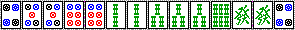
����ɍō��̏����������B���[�`�I���(�LہM)���ꂦ��������_�}���I�H
�Q�\�E�������o�ĂȂ����A���Ƃ���Ȃ������Ȃ킯�ł��Ȃ��̂�(��å)
���Ă̒ʂ�A�T�\�E�����O�ɐ��Ă���A�Q�\�E�̓q�b�J�P���A�R�\�E�R�����u�~��Ȃ���ΐU��v�ł��B
����ł���������Ȃ為�Ѓ��[�`�������B
�����_�}�łQ�U�O�O�̏オ��͑�������(#�L�D`)
���[�`��������Q�{�ɂȂ��A�c��������V�V�O�O�ɂȂ邩��B
����A�s���t�n�̓��[�`�ɃC�}�C�`�����b�g���Ȃ��B�P�O�O�O�_�̃s���t�̂݃��[�`�͂ǂ��]��ł��������A�Q�O�O�O�_�s���t�n���烊�[�`���ăc�����Ă��T�Q�O�O�ɂ����Ȃ�Ȃ��̂�ˁB�B�B
�_�}�Ń����������҂��Q�U�O�O��́A�قƂ�ǕK�����[�`���Ă܂���(�G�L�`)y����~~
���̎�̏ꍇ�A�Q�\�E���o���烊�[�`�C�[�y�[��2600�����ǁA�ꔭ�◠���[�����҂ł��A����������œ��_���{�ɂȂ�Ƃ��������b�g�͂ł�����B
�P���Ȃ��Ƃ������A���[�`���Ă��オ���m�������܂茸��Ȃ��Ȃ�A���[�`�������������@�R(
�L�`)Ɂ@�Ƃ������Ƃ��ȁB
�ド���Ȃ炱�́@�Q�\�E�E���́@��u�ŏo�Ă���ł��傤�B
�ł͎��ɓ��Q�̂��̏�ʁB
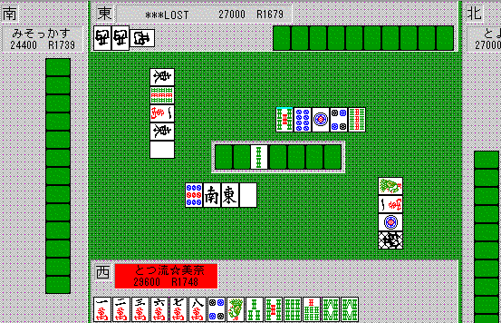
�Ƃ肠�����o�オ��s�\�ȃe���p�C�ɂȂ�܂����B
�����ł͂S�s����ł����ł��B
�g�C�����͊�{�I�Ƀz���C�c�ƌ��Ă������B���̎��_�Ńg�C�����̃z���C�c�ɋC�t���Ă��Ȃ���ŏ�͉����ł�(��)�@�i�������A���N�n�C�݂̂Ƃ��A�g�C�g�C�̉\�������Ă���܂����A�Ƃɂ������ߎ���x�����Ă����Ȃ���_���ł��ˁj
�܂��A�����Ń��[�`�͂����܂���B�h�����������烉�b�L�[�A�S�\�E�������Ă��R�ʑ҂��ɕς��܂��B�B
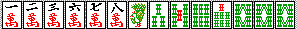
���炭���Ă����i�P�O���ڂ��炢�j�B�g�C�����͂��̒��O�ɔ����|�����āA���E���z���C�c�����������ł����A�}���Y�͂܂��o�Ă��炸�A��o���Ŕ����o�����Ƃ���ł��B
�P�\�E���ă��[�`�I����܂��_�}����(#�L�D`)�����点���H(��)
�E���T�̃����������Q�U�O�O��ł��Ȃ���(
�L�`)y����~~�@�܂��ϑ��҂��ł����A�R�\�E���S�\�E���܂��o�Ă��܂���B
�o�オ��ł��Ȃ��`�Ńe���p�C�����B�I���͂R�ł��B
�E���[�`����
�E���ǂ��`�ɂȂ�̂�҂i�܂��̓c���オ��j
�E�オ�����߂�
��{�I�ɁA����ۂNJ�Ȃ��łȂ���A�����������Ƃ��҂����ǂ���2600�Ȃ烊�[�`���܂��B
1300�̎��͂��ǂ��`�ɂȂ�܂ő҂��A�オ�����߂邩���邱�Ƃ������ł��B
�e�́A�Q������ɂ���Ǝ�o���Ŕ����o�����Ƃ���ł��B���ʁA���̒��x�Ȃ�P�V�����e�����炢�ƌ��Ă����Ǝv���܂��B
������h���h���Ȃ����蓾�܂����A�܂��h�������Ă��オ��Ȃ̂ł���قǕ|���Ȃ����ƁB
�Ă������h�������}���K���ł���( ���ށ�)�����!
���ߎ�ɑ��ẮA���肪�܂��e���p�C���Ă��Ȃ��i�K�ł́A���ߐF�ȊO�ő҂ق��������ł��ˁB
���肪������v�������瑊��͏I����ł��B
�u�~��Ȃ���ΐU��v�悤�ȏ�ԂɎ������ނƂ��Ȃ�S�����ł��B�����������[�`�Ȃ為�Ђ��܂��傤�B
�����������̎�́@�u���悢�`�v�ɂȂ�Ȃ���Ȃ̂ŁA���[�`�������Ȃ����オ�����߂�@�ƌ����Ă������قǂł��B
���Ȃ݂ɂ����ł́A�_�}�ʼnĂ���Ɖ��Ƃ��烊�[�`��������A�݁[�Ȃ͍~��܂����B
�g�C��������S�\�E���o�Ă��܂����˂�(��)�@
�������A����2600����5200�i���̂�����Ɓj�̃����������ŏオ��Ȃ��Ă��オ��˂��(
���ށ�)�m�Ƃ������Ƃł�(��)
���łɓ��R�ɂāB�݁[�Ȃ͐��ƂŁA�h�����Ȃ�Ɛ��Ƃ��������B�X���ڂ�
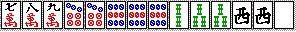
���̂悤��(߰�*)��:*:���ܧ�݂Ƃ����`�B�h���͂܂��o�Ă��炸�A���h���R�̃`���\�X�ł��B���͏�ɐ�Ă��܂��B
��������݁[�Ȃ͂R�\�E����Ă��܂������A�}���K����Ŏ�����߂�悤�Ȃ��Ƃ͂��Ȃ��ق�����낵���B
�V�s���Ȃǂ��o�Ă��|�����ĕЏオ��ɓq���܂��B(���Ȃ��Ƃ��ド�����x���Ȃ�A���͏[���o�܂�)
�Ⴆ�ق�A���P�Ń}���K����Ńe���p�C���Ă��ă��[�`���ꂽ�B���ʁA�}���K����Ȃ珟���I�@�ł��傤�H
�u�e���p�C����Ώ������Ă����v�قǂ̎�Ȃ�A�S�͂Ńe���p�C��ڎw���ׂ��ł��B
���́A�g�C�c�ɂ��Ďg��Ȃ�����g�����A�u�~��Ȃ�����o��v�v�ł��B
�R�̗�Ƃ��u�~��Ȃ�����U���Ă��܂��v�`�̂��b�ł���(��)
�����������[�`�͔��ɗL���ł�(�P�[�P)
�R�ʑ҂����Ȃ��L�����Ƃ������ƂƎ��Ă܂��ȁB�u�~��Ȃ���i���Ȃ�̊m���Łj�U���Ă��܂��v�Ƃ������ƂŁB
Case�S�F2000/7/2�@�v���ҁF�݁`��
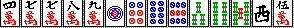
���P�̑��c���B�h���͂S�}���������B
�݁[�Ȃ͑��łłX�s��������B
( �v_�v)�m�͂������I
�����Ɣv�̍\�������悤�B
�m���Ɂ@�P�R�S�@�̂悤�Ȍ`�ł́A�����c�����߂�ꍇ�ɂP���g���Ȃ����Ƃ������B
�����ǗႦ�@�P�R�S�U�W�@��������A�Q�����������ɂS�U�W���������J���ɂȂ�B
������A�P�ƂɂR�����������ā@�U�W�X�@���@�X��@�ƍl����Ƃ܂����B
�Ƃ̑��ł́A�e���P�Ŗڂɐ���������Ƃ������Đ����ȁB
���̎�́u�s���t�n�v�̂����`�ŁA������Ƀ����c���ł��Ă����������Ȃ��肾�˂��B
�����瓪����邱�Ƃ��l���āA���͕s�v���ȂƎv������B
�ŁA�����łX�s���肪�Ȃ����߂��ƌ����ƁA�U�W�X�͂V�����������ɓ���₪�U�X�̂Q���߂��邩�炾�B
�ň��A�����ł��Ȃ������Ƀe���p�C���Ă��A�P�s���P�R���U�X�s���m�x�^���̂ق��������ˁB
�P�s��������Ă����Ӗ��͂悭�킩��Ȃ�����(��)
���̂S�����c���y���`�������܂��Ȍ`�ɂȂ�����A�������@�P�@�X�@�̓����c���Ƃ��Ă͑S���s�v�ɂȂ�B
���̈ʒu�̌��ߕ��Ƃ������A�����ǂ�����Ă������ɂ��ẮA�悭�l���đł��Ȃ��Ƃ܂������Ɓi�N�\���҂��Ƃ��j�ɂȂ��`�B
�U�W�X�@����@�X����Ă��܂��Ă���ƁA�Ō㓪�҂��ɂȂ��āA����ƂU�������ĂU�U�V�W�ɂȂ����̂Ƀt���e���A�Ă��ƂɂȂ邩���(��)�B
���̍����S��
�E�܂��c�����ڂ���������A�����c���ǂ��ɂǂ��ł��邩�킩��Ȃ��Ԃ́A�������߂Ă��܂�Ȃ��悤�ɁB�R�E�c�ɂȂ����肵�ă����c�Ƃ��Ďg����悤�ɂ��Ȃ邵�A���͂����ł���B
�E�Ƃ��ɑ����i�K�i���̃����c��₪�������̏ꍇ�j�ł́A����^�̔v�Ɍ��߂Ă��܂��Ƒ�ςȂ��ƂɂȂ�B�V�Ɍ��߂Ă��܂������߂ɁA�̂Ĕv�ɂU�W�E�E�ƕ��сA�������Ɉ��������ĂT�R�E�E�E�ƃ��_�ɂȂ����肷��(��)�@�ŁA���ǃV�����|���Ńe���p�C�Ƃ�(��)
�E�����c��₪���ꂢ�Ȍ`�Ō��܂�����A�������߂Ă������B���ɁA�P�P�Ȃ������̏ꍇ�A�ǂ����Q�Ƃ������Ă������c���Ƃ��Ă��s�\�������炾�B�u���͒[�Ɋ�v�Ƃ����̂���{�ŁA����̓����c���̂��߂ɂ��d�v���B
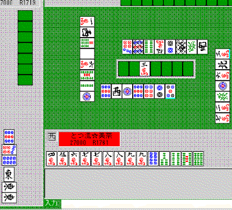
�Ƃ���ł��̋ǁA�܂��݁`�Ȃ͂Q�U�O�O�_�}�ŏオ���Ă��܂���(�܁ށ�#)
�����łȂ�ƂW�s�����c���ă\�E�Y��B
��Ƃ��z���C�c��������Ȃ��̂͊m�������A�z���C�c���C���鎞�A�S���ڂɃV�����p�C�̔��邩���H(��)
�z���C�c��i�܂��͂��̒���j�����鎞�́A���v�̏o�������āA�R�X�O�O�Ȃ̂��T�Q�O�O�Ȃ̂�����ȏ�Ȃ̂��A�������ƍl���悤�B
�����͂W�s�����ă��[�`�I�@�ł��B
�_�}�Œ��������́A�����Ɓu��ւ��̉\�������邩�H�v���悭���邱��(߰�*)
���̌`�Ȃ�s���t�ɂȂ�Ƃ������ǁA�Q�T�E�S�V�\�E�����������o�Ă��āA�����҂��ɕς���Ă�����܂�������Ȃ��B
�܂��}���Y�����Ńs���t�ɂȂ�����C�[�y�[�R�[��������̂ňӖ��Ȃ��B
��ւ��̉\�����Ȃ��A�_�}�Ȃ�Q�U�O�O�ŁA���܂��܂��̑҂��ł���A���������̏ꍇ�Ń��[�`���鉿�l������܂���[
Case�T�F2000/7/6�@�v���ҁF�Ƃ������k
���̑������ɃN�\�L�����őł��Ă���܂��B�f�[�^���킹�łg�m�͂Ɓ��������k�ł����E�E�E
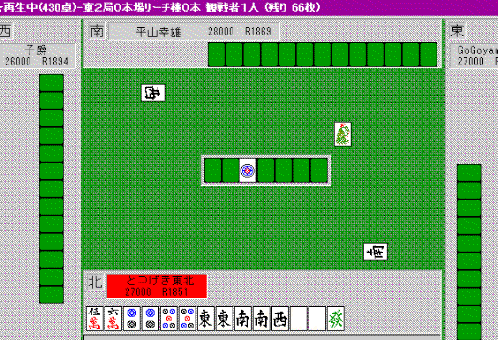
���`��ȍ��\�n�C�p�C�ł�������_�����ȁH
�ς��ƌ���
�E�z���C�c
�E�g�C�g�C�i�`�[�g�C�j
�E���N�n�C
�Ȃǂ��v�����A�g�ݍ��킹��Α傫�Ȏ肪�ȒP�ɂł��������ˁB
�������I�@�Ƃ͂��̎��_�Ŋ�{�I�ɂ��u���N���N�h���h���v��_���̒��S�ɒ�߂܂��B
�����u���ɏ������悤�ɁA�����ăf�[�^�ɏo�Ă���ʂ�A�u����ŏオ��ɂ������Ă܂Ń}���K�����n�l�}���ɂ̂��Ă͂����Ȃ��v����ł�(
������)�B�����ɂȂ�܂��ʂƂ��Ă��A������ł͊�{�I�Ɂu��ԑ����ł���}���K����v����ɍō���ł��B
�Ⴆ���̎�ŁA�e�̑��ł̓���|�����A����Ƀ��N�n�C���|���A����ƁA���Ƃ͂��Ȃ�x������ł��傤�B
��������T�U�}���𗎂Ƃ��Ă��������̂Ȃ�A�Ȃ��Ȃ��オ��Â炭�Ȃ�܂��B
���N�n�C���|�����A�T�s��������ɂЂ����ă����c�ɂ��A�����@�Ǝv�������ɂ̓��N���N�h���h���V�V�O�O���炢�ŏオ���Ă��܂��A�Ƃ����̂����z�I�ł��B
���Ƀz���C�c�ɂȂ�ɂ��Ă��A�W�X�s���Ȃ�������T�N�T�N��肵�Ă��܂��悤�ɂ��āA�オ��₷�����Ă����܂��B
�����łƂ肠�����͑Ő��B�������炭�g��Ȃ����낤���ǁA�����ł̓`�[�g�C�����邱�Ƃ����B�B
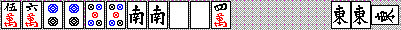
����ɏo�������|�����āA���̌サ�炭���Ă����Ȃ����B
���������Ȃ�ȑO�ɁA�ʂ̎��v��h�����o���ꍇ�̓|�����܂��B�����ĂT�s������Ă����B
�Ⴆ�@���E���@�ƃ|�����Ă��āA�X�ɂT�s���Ȃ��|�������̂ł́A�Q�s����삪�o��̂����҂��ɂ����ł��B
���邢�́A�h���ƃ��N�n�C���|�����ăz���C�c�̃j�I�C�܂ł��Ă���A�N�����v�Ȃǐ��Ă���Ȃ��Ȃ�B
�������A�}���Y�������`������ł���U(�L���M�G)�@�}���Y���R�T�Ƃ��Ȃ�A����������Ă����ł��傤�B
�ςɋZ�I�ɑ����Ă�킯�ł͂Ȃ��A�����u�}���K���ȏ�v�Ȃ�A�����e���p�C���A�܂��x������ɂ������̕����L���Ƃ������Ƃł��B
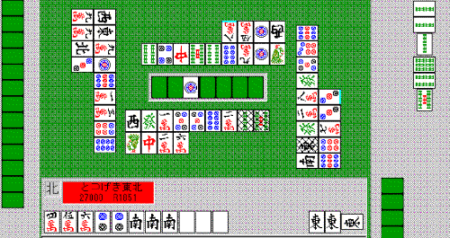
�ŏI�I�ɂ́A�e�̋d�|���������āA���Əオ��ɂ����`�̃e���p�C�ɂȂ������A�̂Ĕv�Ɂ@�S�T�U�}��������ł�����͂����Əオ��₷���͂��B
�z���C�c��g�C�g�C�����Ă�����A�e�̃`���C�c����Ƀe���p�C���Ă������ˁR(
�L�`)�
�Ƃ���Łu�`�[�g�C�P�V�����e�����瑼�̖��ֈڍs����v���Ƃ̐���ł����B
�����Ă��Ȃ��v���P�O�O������ŁA�P�����g���Ȃ��g�C�c���R�Ń`�[�g�C�P�V�����e������`�[�g�C�e���p�C��ڎw���ꍇ�A�e���p�C����m���́A�V��c��������ԂŖ�50���ł��B���l�ɂP�Q���ł�70���B
�i����͑��肪�v���g�p���Ȃ��i�A���R�Ƃ��ɂ��Ȃ��j�ꍇ�ł����āA���ۂ̃Q�[�����ɂ͒��Ձ`�I�ՂŁu�P�����g���Ȃ��v�v�Ƃ����̂���肵�A������������Ƃ͂قƂ�Ǖs�\�ŁA�]���ăe���p�C���x�͂�������������ł��傤�j
����̂P�̃����������^�[�c���V�����c�ɂȂ�m���Ƃ������������ł��B
��{�I�ɂ́A�`�[�g�C�����Ȃ��Ă��オ���`�ł���A�`�[�g�C�͖ڎw���Ȃ���������ƍl���Ă܂��B
���������ɂȂ����ꍇ�ɋ���ĉ���ł����A�M�����u���������ɑ傫���Ȃ邱�ƂȂǂ����R�̈�ł��B
�`�[�g�C�̃����b�g�́A�u���߂Ώo��v�v���i�c��P���̃I�^���Ȃǁj�킩���Ă���A�����ɏꂪ�[�������Ă��邽�߂ɂ��̔v���c��킸���̎R�̒��ɖ����Ă���m���������Ɨ\�z�ł��A����ő҂��Ƃ��ł���A�ꍇ�ɍő�ƂȂ�܂��B
�Ⴆ�Ύc��c��10���̂����Ɂu���߂Ώo��v�v���o��m���͂S�T�������邩��ł��B�ʏ�̃����������҂��ȂǂȂ�A����ł��~��₷���A������肩�~��Ȃ��Ă������c�Ɏg���₷���A�����͂����܂���B
�������ڂ̃`�[�g�C�͐F�X�ȈӖ��ő��ł��傤�B���ڂ������A�܂��e���p�C�ɑ���K�v�v���[���ɑ傫���Ԃ́A�R�V�����e���ł��낤�ƁA�`�[�g�C�P�V�����e���Ǝ�̐i�ݕ��͂��܂�ς��Ȃ��ł��B
���̃n�C�p�C�Ȃ�A�V�����炢�Ń`�[�g�C�ȊO�Ńe���p�C�ł���m�����T�O�����炢�͂���Ǝv���܂���E�E�E�B�h�������Ă��g���邵�B
Column1�F����Ă��邱�ƁA����Ă��Ȃ����ƁF2000/7/14
���`�����̃v�`�]�_�Ƃ����͐F�X�����܂����(��)�B�f�[�^�Ȃ��Ŗ��ʂ��ǂ��Ƃ��A���X�W���ǂ��Ƃ�(��)�B
�ŁA�܂���肠��������̃��x���Ȃ�ǂ����Ă邩�A�Ă��Ƃ������Ă����܂���B
���ꂪ�u����Ă��邱�Ɓv�Ɓu����Ă��Ȃ����Ɓv�ˁB
����Ă��Ȃ�����
�E�ЂƂЂƂ̔v���c���肩�ǂ������`�F�b�N����
�o����̂߂�ǂ�����B�������A���ߎ�ɑ��āA�Ƃ��A�I�[���X�ł����ɂ͐U�肽���Ȃ��E�E�E�Ƃ������Ƃ��́A�`�F�b�N���܂��B
�E�_�}���x������
�h�����o�Ă��Ȃ��Ȃ�Ƃ������A�����łȂ��ꍇ�͒N���_�}�e�����Ă��邩�A�Ƃ����܂�C�ɂ��Ă܂���B�I�[���X�̃g�b�v�̐l�Ƃ��ɑ��Ă͌x�����܂����B�������A���ǂ܂���ɂȂ�����A�Ȃ�ׂ��ʂ��Ă���v���悤�ɂ͂��Ă��܂���B
�E���ʂ����
����܂�ׂ������ʂ͍��܂���B�Ƃ��ɐ��ߎ��d�|���̏ꍇ�́B�q�b�J�P�ɂȂ郊�[�`�ɂ��Ă��A�P���҂��Ă���E�E�E�Ƃ����������H�v�͂��܂肹���A�ނ���f�ŃJ���`�������[�`���āA��q�b�J�P�ɂȂ�����ǂ��Ǝv���܂��B
�E�҂��v���ׂ����i��
���[�`�Ƃ��ɑ��āA�u���ꂪ�����肾�I�v�Ƃ����͍̂l���܂���B�Ȃ��Ȃ�A���R�ȏ�ɂ͂��܂蓖����Ȃ��I�J���g�̗ނ�����ł��B
����Ă��邱��
�E�h�����ǂ��ɂ��邩��������
��Ƀh�������܂�o�Ă��Ȃ����ɁA���������N�������Ă��邩���A�������Ă����B
��̓I�ɂ́A�h���\�o���������Ƃ��Ă���悤�Ȑl�̓h�����g�C�c�ɂ��Ă����肷�邵�A���ߎ�ł��Ȃ��̂ɑ����d�|�������Ă���l�����₵���B���f�͂��̒��x�B����ȏ�́u�ǂ܁v�Ȃ��B
�E�d�|�����x������
���N�n�C�|���A����Ƀ`�[�A�Ƃ���������A�̐��ɓ���܂��B��̓I�ɂ́A�u�}���Y�̏�̕��ƃs���Y�̉��̕����댯�v�Ƃ��u���ߎ�̉\���́H�@�h���̉\���́H�@���̃��N�n�C�̉\���́H�v�Ƃ��A���ꂭ�炢�̃��x���Ŕ��f���A�����̎�̗ǂ��ɉ����ĉ��薳��������~�肽�肵�܂��B
�E�댯�v��肷��
�����̎肪�傫���ꍇ�łȂ���A�P�O���ڂ��炢�܂łɃ����c�̈ʒu��������x��߁A�����v����Ă����܂��B�肪�S�R�ł����A�o���o���ł����Ă��������܂��B
�E�i���ɏ����Łj���̈ʒu���ӎ�����
����̓X�s�[�h���グ�邽�߂ɕK�v���Ǝv�����A�Ƃɂ��������ǂ��ł��邩�A�������ƍl���đŔv��I��ł��܂��B�Ⴆ�A�R�R�Ƃ��g�C�c�������Ă��A�R�̓����c���Ƃ��Ă��g���₷���̂ŁA���̓������l���܂��B���������ꍇ�͂V�W�W�Ƃ�����W���肵�܂���B�t�ɂP�P�Ƃ�������A���̓����c���d���ɂ���A�Ƃ��ł��B
�E�n�C�p�C���ɁA�ǂ̓_����_���悢���A���̂��߂ɂǂ�Ȗ������邩���m�F����
�u���N�n�C�͂P���ꂽ�獇�킹�ł��v�Ƃ����������u��{�v�őł̂ł͂Ȃ��āA�����ł̓��[�`�������č�������オ��K�v������̂��A�̂ݎ�ŗǂ��̂��A�����ɐ��ߎ�Ń}���K���ɂ��Ȃ���Ȃ�Ȃ��̂��A�Ȃǂ��l���܂��B
�E���ʂ����(��)
����A����u����Ă��Ȃ����Ɓv���Ⴄ����������(��)�B����͖��ʂƂ������A���[�`�̂������Ȃ�ł����B����A������x������Ȃ�Ȃ�ӂ�\�킸�\�o�e���ł��ǂ����A�肪�����Ȃ��i�܂��́A�Ȃ�Ȃ��Ɨ\�z�����j�ꍇ�Ȃǂ́A�����ɂQ�Q�R����Q����Ă����āA���܂����������łP�S�҂��ɂȂ�悤�ɂ��܂��B
���ƁA�j�Z�z���C�c�i�S�R�z���C�c�ɂȂ�Ȃ��̂Ƀz���C�c���ۂ��̂Ă�j�͂悭���܂��B
�E�~����̍H�v
�u�U�肳�����Ȃ���Ηǂ��v�Ȃ̂��A�u�オ��Ȃ��Ə����炢�v�Ȃ̂��A�u�~��Ă����Ȃ��v�Ȃ̂����l���A���ꂼ��u���S�x�^�I���v�u�܂킵�ł��v�u�c�b�p�v���܂��B
�܂킵�ł��Ƃ́A�u���̕����͈��S�����A������قƂ�Ǐオ��Ȃ��Ȃ�Ȃ��v���ďꏊ�͐�Ȃ��Ƃ������Ƃł��B���̎��Ɂu�����Ȃ�P���ЃX�W���������邾���Ńe���p�C�ɂȂ�v�u�オ��͉����������̃g�C�c�̓X�W�ň��S���ۂ��v�ȂǁA�����̎�̗ǂ��Ƃ����l�����Ăǂ����邩���f���܂��B
�E�҂��v���i��
�҂��v���i��Ȃ��A�ƌ����Ă��A�S�R���ڂ�Ȃ��킯�ł͂Ȃ��āB���[�`�ɑ��Ă͊�{�I�Ɂu�����ȊO�댯�I�v�u�X�W�Ƃ��͂����������S�i�_���I�ɂ��s���t�����Ȃ��j�v�u�����̐�v�̊O���͂��ƈ��S�v�ƍl���܂��B���q�b�J�P���|���A�Ƃ��A���������̂͂��܂�l���܂���B
����A�H���d�|���ɂ͊��Ƒ҂��v��\�����Ȃ���ł��Ă܂��˂��B�P���ɐH���d�|�����܂߂ĂƂɂ����オ��Ɍ������ꍇ�A��͂�|���ނ̗L�����̊W�ŁA�Ō�̕��łǂ����Ă��u�\�o�e�����ہv���N���邵�A�����Ɏ̂ĂĂ���v�̋ߕӂ͊��ƈ��S�i�����Ă��̋߂�������A�|����`�[�̂��߂Ɏc������ˁj�B
Case�U�F2000/8/14�@�v���ҁF�݁`��
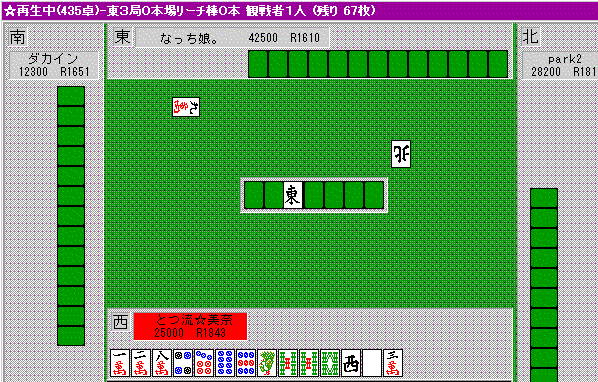
��l����l�ɐU��܂���A���R���}�����ǖʂł��˂��B
��͂܂��܂��B�Ƃ肠�����s���t�n�ŏオ�ꂻ�����ȁB���Ɋ��҂��Ăł����ЂR�X�O�O�ȏオ�~�������A�Ƃɂ������[�`�����������Ƃ���B�ꔭ�����邵�A�����ĂQ�ʂŃI�[���X���}���邱�Ƃ��ł���B
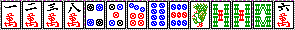
�R���ڂɂ����Ȃ����B�����ł݁[�Ȃ͂W�\�E����Ă��܂����E�E�E�B
�����͂P�\�E��ŁB�U�W�}�����s�[���Ȍ`�����A�܂��R���ڂ�����ˁB
���ɂ����Ń��[�`�������Ă��A�P�\�E���W�\�E������ȂɊ댯�x�͕ς��܂���B
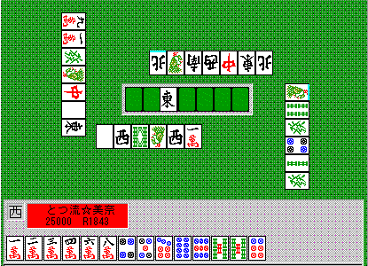
���Ȍ`�Ńe���p�C���܂����B���P����Ă��Q�ʂɓ͂����B
�����ł��̌`�Ȃ�A�^�����I�ւ̕ω�������ƌ��āA����Ȃ�P�}����Ƃ���ł��傤�B
�݁[�Ȃ͂W�}�����܂������A�ω�����ɂ͂R�}���������˂Ȃ炸�A�^�����I�ω��̂R�U�s���������������ˁi^-^�G�j�B
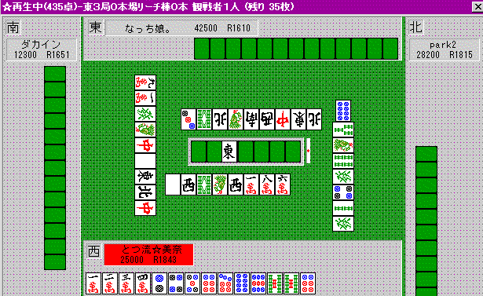
���ǂR�}�������̓���ɑς����˂�(��)�A�C�b�c�[�̕����i�݁`��(
���ށ�)�����!
�ŁA���[�`���������Ă��܂����B�����H(߰�*)��:*:���ܧ��
(߰�*)��:*:���ܧ��
(߰�*)��:*:���ܧ��
(߰�*)��:*:���ܧ��
�͂��@������Ƃۂ�[��Ƃ��������B�B
���[�������A�łP�}���Ō��܂�ł���( ���ށ�)��
��(�LہM)�݁`�ȂS�s�����Ƃ那��
����͂Ђǂ���i���L�D`)�@(��)
�Q�ʂɂȂ�邩������Ȃ�����~�X�~�X�����A�R�ʂ��m�肵�Ă���悤�Ȃ���ł��B�ǂ����U���Ă��R�ʁA�~��Ă��܂��R�ʂȂ̂ŁA�����ł́u���v���Ƃɂ���ď��ʊ��Ғl���ǂ��Ȃ�ǂ��납�啝�ɉ�����܂��B
���ǂ͗��ǂ����̂����A�e���p�C�̂��߂Ɋ댯�v�������������Ă��ˁB
�U��Ȃ������̂͌��ʘ_�����A���ʘ_�Ō����Ȃ�A�����オ��Ɍ������Ă��烊�[�`�C�b�c�[�オ���Ă���(
�L�D`)
���Ď��̋ǁB
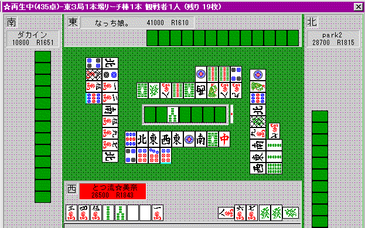
���݂̂Ńe���p�C���Ă���Ƃ���ɁA�܂��Q�ʂ��烊�[�`�B�������Ǝ�����ˁB
�����ł݁[�Ȃ͂Q�R�\�E�𗎂Ƃ��Ă��邪�A�������P�}�����đS�c�b�p�ł��B�P�\�E�͌����Ȃ̂ł܂��o�₷�����B
���ǔ��z���C�c�Œ��蒼�������A���[�`�҂��}���K���c����オ��܂����B
�������甒���|�����ăz���C�c�A�Ƃ����C�Ȃ�܂��킩��Ȃ��ł͂Ȃ����A���Ȃ�ʉ��Ƃ̃��[�`�A�����͏オ���\�����ő���ɂ��ׂ����B���ꂪ�Ⴆ�Ώ�Ƃ̃��[�`�ŁA�Q�R�\�E�����Ă�����Ȃ�A�����z���C�c�Ɏ����Ă������낤�E�E�E�B
���̂Q�ǂ����āA�݁[�ȂɁu�C�̖����ō~��Ă�������H�v�ƕ�������A��������Ȃ��l�q(��)�B
�ǂ����A�����ō~���������m���������Ǝv���Ă���悤�����A�S�R���Ⴄ����(��)
�u�U���Ă��~��Ă��ŏI���ʂ͂قƂ�Ljꏏ�v�Ȃ�A�U�߂Ȃ��Ƒ��Ɍ��܂��Ă�B
���ɂ��̏ꍇ�A�������R�ŁA�����т̂Q�ʑ����̑���̃��[�`������A�قƂ�ǂ������u�I�[���X�v�ƌ����Ă��ǂ��B
�������̋ǂ������B
��������̎肪�傫����A�ǂ����N����オ���Ă��Q�ʂ͎����čs�����B�������U��̂Ɠ������B
��������̎肪�������Ȃ�A�������U���Ă�����Ȃɏ͕ς��Ȃ��B
�܂�U�邱�Ƃɂ���Ĉ����Ȃ鏇�ʊ��Ғl���قƂ�ǂO�ŁA�t�ɍU�߂邱�Ƃɂ���ď��ʊ��Ғl�͗ǂ��Ȃ�B
�u�U���Ă����Ȃ��v�ł́A��U�߂�I�I
���ɂ��ꂪ�g�C�������Ƃ̃��[�`�Ȃ�A�~�肽��������˂��B��������āA�������オ��Ƃǂ��Ȃ̂��A�Ƃ������ʊ��Ғl�I�ϓ_��厖�ɂ��܂��傤�Ƃ������ƁB
�~��Ď��̋ǂɊ��ҁA�Ƃ����̂́A���������S���̂P�����������Ȃ��Ƃ������Ƃ����Y��Ȃ��B�~��ē���̑��肪�U�邱�Ƃɂ���ėL���ɂȂ�ꍇ�͂Ƃ������ˁB���̏�A��������T�N�b�Əオ��ꂽ��A����͍���̔ވȏ�̎�����˂Ȃ炸�A���Ȃ荢��ɂȂ�킯�B
�����ĉ��̉�ʂ͕ʂ̑ΐ�̂�����B
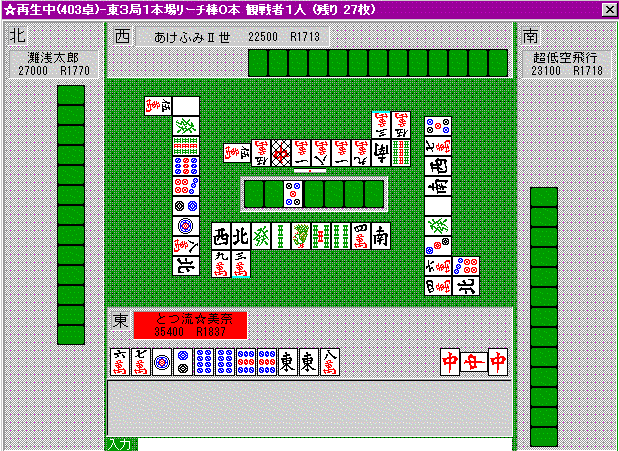
�������R�ŁA�܂��܂��̃g�b�v�B�����ł܂��A�_���̗��ꂽ�g�C�������烊�[�`�ˁB
�������~�肽�͂��̂݁[�Ȃ́A�����ł͂X�s������Ă�(
�L�D`)�@�@�@�܂��A�{�l������́u�~�X�v�Ƃ킩���Ă������B
�����̓_�u�g�����Ƃ��オ���Ă���ꍇ�ł͂Ȃ��B
�g�C�������オ���Ă����A�I�[���X���܂��܂��Q�ʂƗ��ꂽ�g�b�v�Ō}�������̂��B
�܂�u�U��Ȃ���Ηǂ��v�Ƃ������ƁB
�A���p�C���P�����Ȃ��A�U�߂Ă��~��Ă��قƂ�Ǔ����A�Ƃ����Ȃ�Ƃ������A�U�V�W�}���͒ʂ邾�낤���A���S���č~���ׂ��ǖʂ��B
�������̗�Ƃ͋t�ŁA�u�U�߂�v���Ƃɂ���ď��ʊ��Ғl�͂قƂ�Ǘǂ��Ȃ炸�A�댯�Ȃ������Ȃ̂ˁB
�u�オ���Ă��Ӗ��Ȃ��v�ł́A��~���I�I
���ꂪ�A�g�C�������R�S�O�O�O�_�Ƃ��Ȃ�܂��b�͕ʁB�����`�Ȃ̂ɁA�~�X�~�X�P�ʂ������ł���Ă�邱�Ƃ͂Ȃ��B
�_���ɉ������I�m�ȍU�߁E�~�������A�������e���E�a�����ł��A���Ϗ��ʂ͂����Ɨǂ��Ȃ�܂�(-_��)
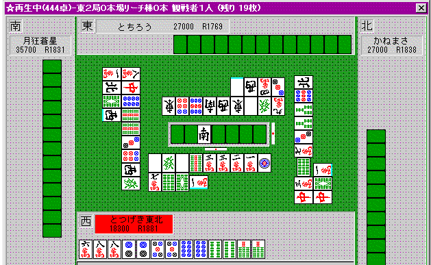
����͂���̔v�������B���`���N�`���ȃ��[�`�ł���(*/�ށ_*)
�ł��A����ł����˂��`
���̋ǂɉ��Ƃ��オ���ē��R�ɂȂ�ƁA������]�I�B�u�}���K�����ŋt�]�ł��鑊��v���g�C�����݂̂ɂȂ�ƁA�����V�r�A�B
�̂ɁA�~���킯�ɂ͂����Ȃ��B�ǂ����~��Ȃ�����ւ������܂�]�߂Ȃ��Ȃ�A���[�`�������������ȁB
�X�}�����c�����Ē��q�b�J�P�ɂȂ邱�Ƃ��F����[�`�B
���ʁA���Ƃ���o�ă}���K���ł����B���Ȃ݂ɂ��̎����A���ǃg�b�v��ꂽ��(߰�*)��:*:���ܧ��
Column2�F�Ƃ̎��̓A�b�v�X�e�b�v�F2000/9/16
�q1700�܂ł͊ȒP�A���Ǝv���B�S�������l�����u����v�����łЂ�����ł��Ă�A�q1700���炢�ɂȂ�̂ł́H
���ɂ悭������̂��u�q1800�ȏ�ɂȂ�ƁA�Ȃ��Ȃ��q���グ���Ȃ��v�Ƃ������c�B
�u�p�ɂɏo��ւ̑Ώ��Z�p�v��g�ɕt���邱�ƂŁA�q�͈�C�ɏ㏸����B
�Ⴆ�u�I���v���o����B�P�����̂����R�ǂ��炢�́u�~��v�Ă���̂����ʂł���A������o����ƃ����ɕ��Ϗ��ʂɉe������B
�܂��u�����c���̌������v���d�v�ŁA�~��قǂł͂Ȃ������Ȃ蕽�Ϗ��ʂɉe����^���邾�낤�B
���Ɂu�_���̔c���v�����Ϗ��ʂ�傫�����E����B
�����u�R��Z�p�v���A���Ȃ�ō����x���܂ō��߂�ƁA���傤�ǂq1800���炢�ɂȂ�Ǝv����B
����ȏ�́A�����ƒn���ȋZ�p���R�c�R�c�o���Ă������Ƃ��d�v�ɂȂ�悤�Ɏv���B
�Ƃ��������n�߂�����A1999�N�̂S���̒i�K�ł́A����̈���q�̓��C���C��łq1700���炢�������B
��ł������������c�����A���[�`�ɂ͈ꉞ�X�W������莞�ɂ̓x�^�I�����郌�x���B
�ǂ��������Ƀz���C�c�����������A�Ƃ��͂悭�킩���Ă��Ȃ��B
���̌�m�荇���ȂƂ����Ƒł��āA����q��1750���炢�ɂȂ����B
���̂���́u�Ƃɂ����X�s�[�h�オ�聕�x�^�I���v�̑ł��������Ă����B
�_����������x�l���đł悤�ɂȂ����̂����̂���B
���������オ��̓C�}�C�`�L���ł͂Ȃ����ƂɋC�t���A�h����������Ȃ���s���t�n���[�`��ōU�߂�悤�ɂ��Ăq1800�B
���̂��납��ド���ɍs���悤�ɂȂ�B
�z���C�c�̐��ߕ��Ȃ��Ȃ��Ȃ����܂��Ȃ��Ă�������B
���傤�ǁA�u�����u���@�����ҁv�ʂ�̑ł����A�Ċ������Ȃ��B
�������炪�Ȃ��Ȃ����x�����オ��Ȃ�����(��)�B
�Ƃɂ����搧���[�`���x�^�I�������Ă���̂�����A������͂����Ȃ��I�@�Ǝv���Ă���̂ɁA�ǂ����Ă��q1850�Ƃ������E�Ȃ�(��)�B
���炭�q�̏オ��Ȃ������𑱂���B
���������ꂽ���̂ŁA���̑ł����ł��ׂ��������c���̌������Ƃ��A����̐��ߎ�ւ̑Ώ��@�Ȃǂ̍H�v�ŃW���W���q���オ��B
����q��1850���炢���Ȃ��B
���̌�A���[�`�̂��������A�_�}�ɂ���ꍇ�A�����ȐH���d�|���̋֎~�A�Ȃǂ̍H�v�i�����W���u���ɏ��������e�̂�ˁj�ŁA���Ȃ�q���オ�����B����1900�����̂����̂�����B
���ꂩ��A�Ӗ��Ȃ����オ�������邱�Ɓi��̓I�ɂ́A���[�̂݁E�s���t�̂݃e���p�C���Ӓn�ł������邱�ƁI�j�A���N�n�C���i��x�����̍H�v�A�����c�����j�̈�V�ŁA���̎��͂ɂȂ����Ǝv����B